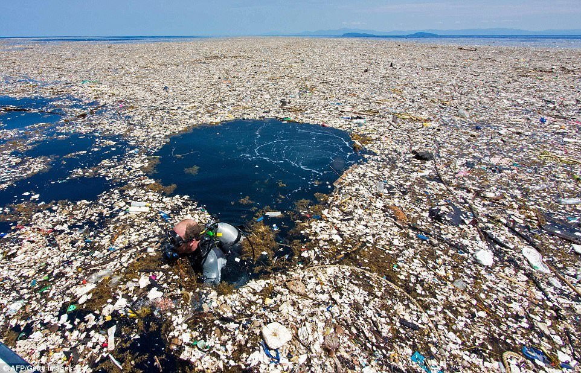
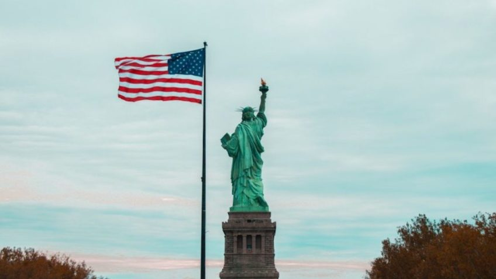
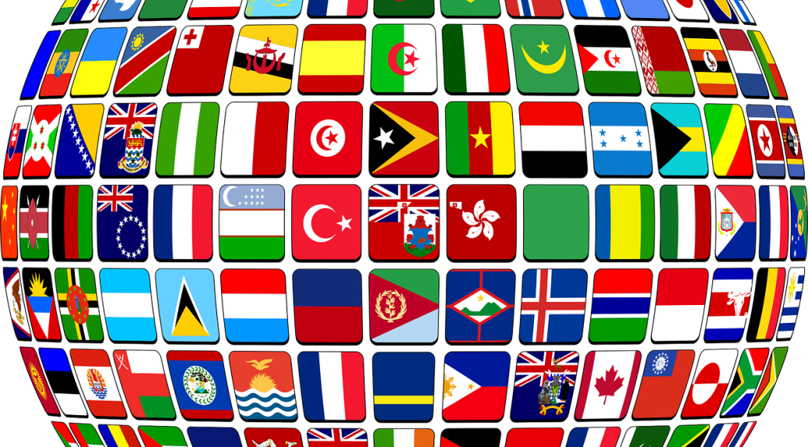
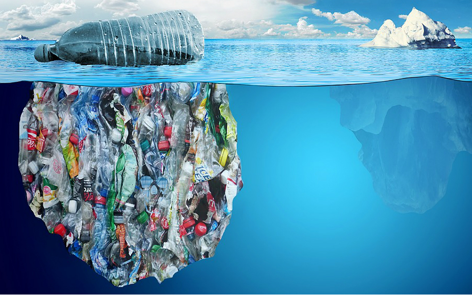
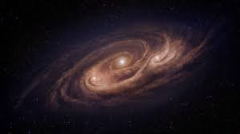

Primeira curiosidade
Ilha de Lixo / Grande Mancha de Lixo do Pacífico possui 3 vezes o tamanho da França
Segunda curiosidade
Os Estados Unidos são a principal fonte de lixo plástico no oceano
Terceira curiosidade
10 países que mais despejam plástico nos oceanos (dados de 2021):
1.Índia - 126,5 milhões de kg de plástico
2.China - 70,7 milhões de kg de plástico
3.Indonésia - 56,3 milhões de kg de plástico
4.Brasil - 38 milhões de kg de plástico
5.Tailândia - 22,8 milhões de kg de plástico
6.México - 3,5 milhões de kg de plástico
7.Egito - 2,5 milhões de kg de plástico
8.Estados Unidos - 2,4 milhões de kg de plástico
9.Japão - 1,8 milhões de kg de plástico
10.Reino Unido - 703 mil kg de plástico
Quarta curiosidade
Até 2050 os oceanos poderão conter, por peso, mais plástico do que peixe
Quinta curiosidade
Microplásticos (dados de 2017) - Há 51 biliões de partículas microplásticas nos mares, 500 vezes mais do que estrelas na nossa galáxia